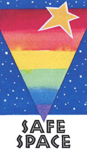

How we can Move Forward
At this point, we have established that LGBTQ representation in STEM fields is lacking and even within these fields, there is a lot of unequal opportunities and treatment. So how can we actually fix this?
To start, at the academic level, implementation of more oSTEM chapters worldwide would be a good start. There thousands of colleges or universities in the United States alone and there are only 75 chapters of oSTEM. With how little the organization is extended throughout the United States, it makes LGBTQ individuals in STEM fields invisible. Even in campuses with existing chapters, they should make an effort to become a larger campus presence, posting posters, advertising, etc. Here at Cornell, I did not know about oSTEM being on campus until I actively looked for it. If this organization can make itself more visible, it will bring the issue up to those who may not realize it is in fact an issue. Furthermore, professors could put up on their door or window "Safe Space" stickers to make their students feel more comfortable.
In the industry, there are some more difficulties to overcome. "Safe Space" stickers may also be used. LGBTQ individuals could join NOGLSTP, although it does exclude transgender individuals. Ideally, HR departments should start including LGBTQ issues in any diversity training the company or organization might have.
One of the last ways we might be able to make this issue come to light is by doing research if possible. As a group of scientists, many of us may be in a position to do a study on this topic. If we can gather more data and publish more papers on the subject, it will help to bring this issue up to other scientists, who will become more aware of the position in which we find ourselves.